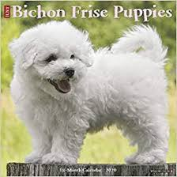

A Bichon Frise, meaning 'curly lap dog') is a small breed of dog of the bichon type. The Bichon Frise is a member of the Non-sporting Group of dog breeds in the United States, and a member of the Toy dog Group in the United Kingdom
The Bichon Frise is a small dog that weighs approximately 5–10 kg (10–20 lbs) and stands 23–30 cm (9–12 in) at the withers, but slightly larger dogs are not uncommon. The skull is slightly rounded and the muzzle is not pointy. The tail is groomed to be long and curly and is carried over the back. It has a black nose and dark round eyes; its white hair consists of a curly, dense coat with little shedding (much like a poodle in this respect), although many of the breed do tend to have less curly hair than others. A small amount of buff, cream, or apricot colour may be seen around its ears, snout, paws or body, but normally these colours do not exceed 10% of its body. FCI/AKC Standard coat colour is pure white; other colours such as apricot or grey and brown are not recognised. A white coat is preferred in the show ring. The head and legs are proportionate in size to the body, and the ears and tail are natural (not docked or cropped). The coat is trimmed often to make the hair seem like an even length. Bichon Frises have a medium-high intelligence.
Here are links to other sites I made. click here for pizza click here for java